Brad's sweet home : éléments de correction
On reprend le sujet en indiquant des éléments de correction sous cette forme :
Dans ce TP, on continue notre exploration de notions et techniques de base pour la science des données. On va notamment manipuler des fichiers de données beaucoup plus gros que précédemment et réaliser des tâches de régression.
Tous les TPs précédents doivent impérativement avoir été faits.
À l'issue de ce TP, vous m'envoyez par email un compte-rendu (format pdf) indiquant la réponse aux questions qui sont posées. Vous m'envoyez également un fichier python réalisant toutes les manipulations de ce TP : je dois pouvoir exécuter ce fichier en tapant python3 nom-de-votre-fichier.py et reproduire vos résultats. Cette exécution ne doit pas provoquer d'erreur de python. Remarque : un notebook ne convient pas.
Introduction
Brad vit en altitude, dans les montagnes du Colorado (il y fait froid assez tôt dans l’automne et jusque tardivement au printemps). Il a aménagé une station de collecte des températures. Ainsi, quatre thermomètres électroniques mesurent la température dans son séjour, son bureau, son sous-sol et à l’extérieur de chez lui, toutes les 3 minutes. Ces thermomètres sont reliés à son ordinateur qui stocke chacune des mesures dans quatre fichiers, un fichier par thermomètre. On dispose de ces quatre fichiers qui contiennent plusieurs dizaines de milliers de mesures. Notre objectif est d’étudier les températures ainsi mesurées. On sait également que le thermostat de Brad est réglé à 21°C pendant la journée, à 16°C pendant la nuit.
Ces 4 fichiers de données sont disponibles à ces 4 urls :
- https://philippe-preux.github.io/ensg/miashs/datasets/brad-basement
- https://philippe-preux.github.io/ensg/miashs/datasets/brad-lab
- https://philippe-preux.github.io/ensg/miashs/datasets/brad-livingroom
- https://philippe-preux.github.io/ensg/miashs/datasets/brad-outside
Ces 4 fichiers ont le même format.
Dans votre navigateur, regardez l'un d'eux.
Vous constatez qu'il ne s'agit pas de fichiers csv et qu'ils n'ont pas d'en-tête avec le nom des attributs.
Dans ces 4 fichiers, les colonnes sont séparées par un espace. Dans l'ordre, les colonnes correspondent aux informations suivantes :
- l'année
- le mois
- le quantième
- heure
- minute
- température
Les lignes de chacun de ces fichiers sont ordonnées chronologiquement.
Comme d'habitude, on va commencer par créer un tableau de données, les explorer à la main et visuellement, avant d'utiliser des méthodes analytiques.
Construction d'un tableau de données
Chargement des tableaux de données
On commence par lire chacun de ces fichiers en le stockant dans un tableau de données.
Pour lire ces fichiers qui ne sont pas au format csv, on utilisera la méthode read_table() de pandas. Regardez la documentation pour utiliser les bons arguments et lisez ces 4 fichiers dans 4 tableaux de données différents. Comme ces fichiers n'ont pas d'en-tête indiquant le nom des colonnes, donnez-leur un nom lors de la lecture. On trouve les mêmes 5 attributs indiquant la date et l'heure dans les 4 fichiers ; donnez-leur le même nom (ce qui vous simplifiera les choses un peu plus tard).
Comme la méthode read_table() est très générale (on peut lire des tas de formats différents), elle possède de très nombreux paramètre. On peut être un peu perdu face à tous ces paramètres. Aussi, pour vous aider, je vous indique les paramètres de read_table() à utiliser. D'une manière générale, pour trouver les bons paramètres il faut impérativement avoir regardé le contenu du fichier pour voir s'il y a un en-tête avec le nom des attributs, comment les valeurs des attributs sont séparées, ... Cette inspection faite, dans le cas présent :
- il faut indiquer le nom du fichier (ou son url) contenant les données à charger dans un tableau de données.
- comme il n'y a pas d'en-tête, il faut l'indiquer avec le paramètre header,
- et il faut indiquer le noms des attributs avec le paramètre names.
- Enfin, vous avez constaté que les valeurs sont séparées par un espace, il faut donc le spécifier avec le paramètre delim_whitespace.
Vérifiez que la lecture s'est bien passée.
Fusion
On doit maintenant rassembler le contenu de ces 4 tableaux de données dans un seul. Cette fusion doit s'effectuer en fonction de l'instant de la mesure.
Le tableau de données fusionnés sera nommé brad.
Il faut utiliser la méthode merge_ordered() de pandas qui fusionne deux tableaux de données.
N'hésitez pas à regarder la documentation concernant cette méthode, la page décrivant merge_ordered () et une page qui explique la fusion de tableaux de données.
Comme les opérations de fusion sont assez compliquées à maîtriser et qu'il en existe de différentes sortes, je vous donne l'idée générale de ce qui doit être fait dans ce TP. La commande suivante :
pd.merge_ordered (df1, df2, on = liste_des_attributs_communs_sur_lesquels_on_fait_la_fusion, how = "outer")
fait la chose suivante :
- on suppose que l'on a deux tableaux de données df1 et df2 à fusionner.
- On suppose que ces deux tableaux de données pnt un certain nombre d'attributs ayant le même nom selon lesquels on veut effectuer la fusion : la liste de ces attributs est fournie dans le paramètre on.
- Cette commande renvoie un tableau de données qui est la fusion de df1 et df2.
À faire : construisez ce tableau de données brad.
Remarque : bien entendu, lorsqu'on réalise une telle opération de fusion, on vérifie que tout se passe bien. Puisque nous allons ensuite travailler uniquement sur le tableau de données brad, si celui-ci, pour une raison ou une autre, n'est pas construit correctement, tout ce que nous ferons par la suite sera faux.
Il faut donc impérativement passer quelques instants à s'assurer que brad a été correctement construit.
Pour vous aider, je vous indique ci-dessous les début et fin de brad correctement chargé :
>>> brad.head()
an mois j h mn temp_b temp_l temp_lr temp_o
0 2003 7 25 16 4 24.0 NaN 29.8 27.5
1 2003 7 25 16 7 24.0 NaN 29.8 27.3
2 2003 7 25 16 10 24.0 NaN 29.8 27.3
3 2003 7 25 16 13 24.1 NaN 29.8 27.4
4 2003 7 25 16 16 24.1 NaN 29.8 27.8
>>> brad.tail()
an mois j h mn temp_b temp_l temp_lr temp_o
169831 2004 7 16 15 16 21.7 22.9 22.8 16.8
169832 2004 7 16 15 19 21.7 22.9 22.8 16.9
169833 2004 7 16 15 22 21.7 22.9 22.8 16.8
169834 2004 7 16 15 25 21.7 22.9 22.8 16.8
169835 2004 7 16 15 28 21.7 22.9 22.8 16.4
import pandas as pd
# on charge les 4 fichiers de données
brad_b = pd.read_table ("/home/ppreux/philippe-preux.github.io/ensg/miashs/datasets/brad-basement", names = ["an", "mois", "j", "h", "mn", "temp_b"], header = None, delim_whitespace = True)
brad_l = pd.read_table ("/home/ppreux/philippe-preux.github.io/ensg/miashs/datasets/brad-lab", names = ["an", "mois", "j", "h", "mn", "temp_l"], header = None, delim_whitespace = True)
brad_lr = pd.read_table ("/home/ppreux/philippe-preux.github.io/ensg/miashs/datasets/brad-livingroom", names = ["an", "mois", "j", "h", "mn", "temp_lr"], header = None, delim_whitespace = True)
brad_o = pd.read_table ("/home/ppreux/philippe-preux.github.io/ensg/miashs/datasets/brad-outside", names = ["an", "mois", "j", "h", "mn", "temp_o"], header = None, delim_whitespace = True)
# on les fusionne dans un seul
brad = pd.merge_ordered (brad_b, brad_l, on=["an", "mois", "j", "h", "mn"], how="outer")
brad = pd.merge_ordered (brad, brad_lr, on=["an", "mois", "j", "h", "mn"], how="outer")
brad = pd.merge_ordered (brad, brad_o, on=["an", "mois", "j", "h", "mn"], how="outer")
# on détruit les objets dont on n'a plus besoin
del brad_b, brad_l, brad_lr, brad_o
Obtenez-vous le même résultat ? Est-ce que votre tableau de données semble correct ?
J'ai nommé les colonnes correspondant aux différentes températures temp_b pour le sous-sol (basement), temp_l pour la laboratoire (lab), temp_lr pour le salon (living-room) et temp_o pour l'extérieur (outside).
Notez bien les NaN : vous devez les avoir aussi pour ces lignes-là.
Question : qu'est ce que ces NaN ? Que font-ils là ? Quel est leur signification ?
Les NaN indiquent les valeurs manquantes.
Une fois la fusion correctement réalisée, on peut détruire les 4 tableaux de données (commande python del) et ne conserver que brad.
Exploration visuelle du jeu de données
On peut commencer par quelques graphiques. Par exemple, représentons ces courbes de températures.
Un premier essai pourrait vous donner cela :
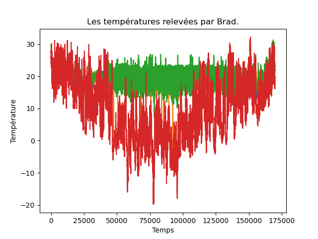
où on ne voit rien !
À faire : réalisez le graphique ci-dessous qui montre les 4 courbes de températures séparées les unes des autres. Notez bien les ordonnées de chaque courbe : c'est le même intervalle de valeurs (-25°, 25°), ceci pour pouvoir mieux les comparer visuellement. Vous devez obtenir exactement les mêmes figures.
labels = ["basement", "lab", "living room", "outside"]
couleurs = ["red", "blue", "green", "turquoise"]
fig, ax = plt.subplots (4,1)
for i in range (4):
ax [i].plot (brad.iloc [:,i+5], c = couleurs [i])
ax [i].set_ylim (bottom = -25, top = 35)
ax [i].set_ylabel (labels [i])
ax[0].set_xticklabels ("")
ax[1].set_xticklabels ("")
ax[2].set_xticklabels ("")
ax[3].set_xlabel ("Temps")
ax[0].set_title ("Les températures relevées par Brad.")
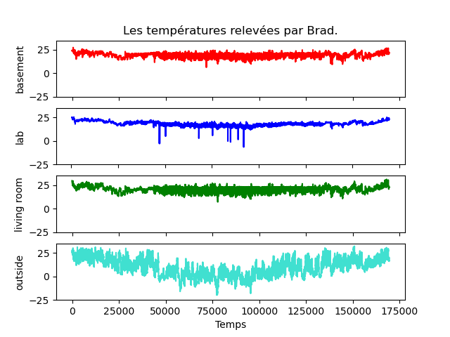
C'est beaucoup mieux. Néanmoins, l'axe des abscisses est illisible. S'agissant de l'instant de mesure des températures, on préférerait y lire des dates, commme sur cette figure :
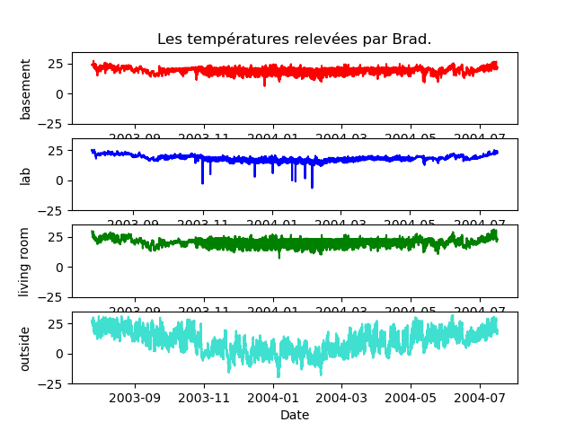
C'est ce que nous allons faire mais cela nécessite quelques explications concernant les dates. Nous y reviendrons un peu plus loin.
Quelques autres graphiques
À faire : réaliser les 2 graphiques ci-dessous qui affichent les histogrammes des 4 températures. J'utilise le paramètre bins = 250 à gauche et bins = 1000 à droite. Remarquez les différences que cela entraîne sur le graphique. D'où viennent ces « trous » ?
labels = ["basement", "lab", "living room", "outside"]
attributs = ["temp_b", "temp_l", "temp_lr", "temp_o"]
couleurs = ["red", "blue", "green", "turquoise"]
for i in range (4):
ax [i]. set_ylabel (labels [i])
ax [0]. set_title ("Histogramme des températures relevées par Brad.")
ax [3]. set_xlabel ("Température")
fig.show ()
fig, ax = plt.subplots (4,1)
for i in range (4):
a = attributs [i]
brad. hist (column = a, bins = 1000, ax = ax [i], grid = False, color = couleurs [i])
fig.show ()
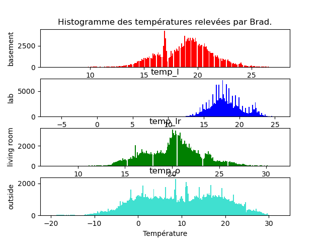 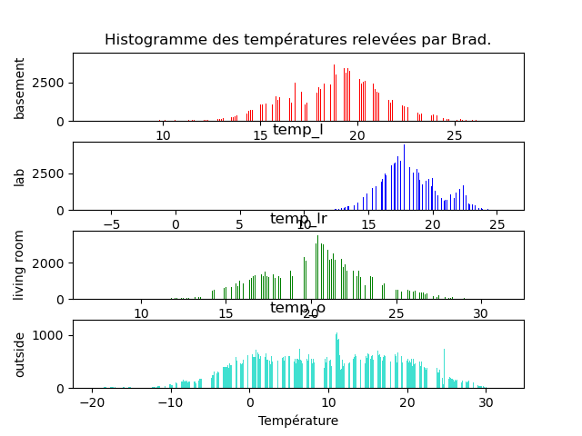
Dates
Les dates sont des objets complexes : ce ne sont pas des nombres, mais on peut faire des opérations entre dates : on peut soustraire une date à une autre et obtenir une durée. De même, on peut ajouter une durée (positive ou négative) à une date et obtenir une autre date. Par ailleurs, il y a un ordre total sur les dates.
Concernant leur représentation, il en existe de multiples : par exemple, en français, on peut écrire 13/10/23, 13/10/2023, 13 octobre 2023, 13 oct. 2023, ... On peut trouver des dates écrites sous des formats très différents dans les jeux de données, et c'est la même chose pour les heures : 14h 27 mn, 14h 27 mn 29 s, 14:27:29, ...
Cette souplesse dans l'écriture nécessite des fonctions spécifiques permettant de les lire, les afficher et les manipuler.
On distingue deux cas : la date (et l'heure) est représentée par une chaîne de caractères qu'il faut correctement analyser ; la date (et l'heure) est représentée par un ensemble d'attributs, comme c'est le cas dans le jeu de données de Brad.
Dans les deux cas, on utilise la méthode to_datetime () de pandas.
La transformation des 5 attributs jour, mois, année, heure, minute en date se fait à l'aide de la méthode to_datetime() de pandas.
À faire : Regardez la documentation de cette méthode (regardez les exemples) et ajoutez un attribut date au tableau de données brad contenant la date et l'heure de chaque ligne.
brad ["date"] = pd.to_datetime (pd.DataFrame ({"year" : brad.an, "month" : brad.mois, "day" : brad.j, "hour" : brad. h, "minute" : brad.mn}))
Cela fait, l'attribut date contient un « tampon temporel » qui indique une date et une heure. Par exemple :
brad.date [0]
donne :
Timestamp('2003-07-25 16:04:00')
et on peut facilement accéder à chaque élément de ce tampon temporel :
>>> brad.date [0].day 25 >>> brad.date [0].month 7 >>> brad.date [0].year 2003 >>> brad.date [0].hour 16 >>> brad.date [0].minute 4 >>> brad.date [0].second 0
et à d'autres informations :
>>> brad.date [0].month_name () 'July' >>> brad.date [0].day_name () 'Friday' >>> brad.date [0].day_of_week 4 >>> brad.date [0].day_of_year 206 >>> brad.date [0].week 30 >>> brad.date [0].weekofyear 30 >>> brad.date [0].days_in_month 31
On peut alors facilement sélectionner des lignes correspondant à certains moments. Par exemple, la température du séjour pour toutes les lignes qui correspondent aux 23 du mois :
>>> brad [brad.date.dt.day == 23].temp_lr
13590 24.1
13591 24.1
13592 24.1
13593 24.0
13594 24.0
...
159136 21.8
159137 21.8
159138 21.7
159139 21.7
159140 21.6
Application aux dates dans le jeu de données Brad
À faire : répondez aux questions suivantes :
- à quelle date a-t-il gelé la première fois en 2003 ?
Le 26 octobre 2003 à 2h19mn. Il y a beaucoup de manière de trouver cette valeur. En voici une :
brad.loc [brad.loc [:,"an"] == 2004] [brad.loc [:,"temp_o"] < 0].loc [:,"date"].iloc [0]
- Durée de la période de gel durant l'hiver 2023-2004 ?
En 2004, la dernière géle a eu lieu le 30 avril à 17h43. On obtient cette date par exemple en faisant :
brad.loc [brad.loc [:,"an"] == 2004] [brad.loc [:,"temp_o"] < 0].loc [:,"date"].iloc [-1]
Pour connaître le durée, il suffit de faire la différence entre ces deux dates :
rad.loc [brad.loc [:,"an"] == 2004] [brad.loc [:,"temp_o"] < 0].loc [:,"date"].iloc [-1] - brad.loc [brad.loc [:,"an"] == 2004] [brad.loc [:,"temp_o"] < 0].loc [:,"date"].iloc [0]
qui répond 118 jours, 22 heures et 54 minutes.
- Quelle est la température extérieure moyenne entre 13h et 14h dans l'ensemble du jeu de données ?
brad.loc [brad.loc [:,"h"] >= 13] [brad.loc [:,"h"] ≤ 14].loc [:,"temp_o"].mean()
qui donne presque 14 °C.
- Quelle est la température extérieure moyenne pour chaque mois ?
for an in range (2003, 2005): for mois in range (1, 13): if brad.loc [(brad.loc [:,"an"]==an) & (brad.loc [:,"mois"]==mois),"temp_o"].shape[0]: temp_moyenne = np.mean (brad.loc [(brad.loc [:,"an"]==an) & (brad.loc [:,"mois"]==mois),"temp_o"]) ch = "{}/{} : {:4.2f}" print (ch.format (mois, an, temp_moyenne)) - Quelle est la température extérieure moyenne à chaque saison ? On supposera que les saisons commencent les 21 des mois de mars, juin, septembre et décembre.
Il y a différentes manières de faire. Pour faire très simple, j'ajoute un attribut saison qui vaut 1 pour le printemps, 2 pour l'été, 3 pour l'automne, 4 pour l'hiver. Ensuite, je filtre les lignes en fonction de la saison et j'en calcule la moyenne.
brad ["saison"] = 1 brad.loc [(brad.loc [:,"date"] ≥ pd.Timestamp(2003,6,21)) & (brad.loc [:,"date"] < pd.Timestamp(2003,9,21)),"saison"] = 2 brad.loc [(brad.loc [:,"date"] ≥ pd.Timestamp(2004,6,21)) & (brad.loc [:,"date"] < pd.Timestamp(2004,9,21)),"saison"] = 2 brad.loc [(brad.loc [:,"date"] ≥ pd.Timestamp(2003,9,21)) & (brad.loc [:,"date"] < pd.Timestamp(2003,12,21)),"saison"] = 3 brad.loc [(brad.loc [:,"date"] ≥ pd.Timestamp(2004,9,21)) & (brad.loc [:,"date"] < pd.Timestamp(2004,12,21)),"saison"] = 3 brad.loc [(brad.loc [:,"date"] ≥ pd.Timestamp(2003,12,21)) & (brad.loc [:,"date"] < pd.Timestamp(2004,3,21)),"saison"] = 4 np.mean (brad.loc [brad.loc [:,"saison"] == 2,"temp_o"]) # 18.60659823861916 np.mean (brad.loc [brad.loc [:,"saison"] == 1,"temp_o"]) # 12.197569880205362 np.mean (brad.loc [brad.loc [:,"saison"] == 3,"temp_o"]) # 6.797878844887593 np.mean (brad.loc [brad.loc [:,"saison"] == 4,"temp_o"]) # 1.462302654257153
- Le thermostat joue-t-il bien son rôle de régulation de la température intérieure dans les 3 pièces ? Dit autrement, fait-il à peu près 21°C pendant la journée, à 16°C pendant la nuit tout au long de l'année chez Brad ?
Pour répondre à cette question sans quand même trop se compliquer la tâche (quand commence la nuit, quand se termine-t-elle ?), on considère que la nuit commence à 20h et se termine à 7h. En fonction du résultat obtenu, parait-il correct ou aberrant, on pourra affiner au besoin.
Donc on calcule la température moyenne pour les 3 pièces, de 20h à 7h d'une aprt, entre 7h et 20h d'autre part.np.mean (brad.loc [(brad.loc [:,"h"] > 20)|(brad.loc [:,"h"] < 7),"temp_b"]) # 18.50657665751719 np.mean (brad.loc [(brad.loc [:,"h"] > 7)|(brad.loc [:,"h"] < 20),"temp_b"]) # 18.87542006891018 np.mean (brad.loc [(brad.loc [:,"h"] ≥ 20)|(brad.loc [:,"h"] < 7),"temp_l"]) # 17.972960595396884 np.mean (brad.loc [(brad.loc [:,"h"] ≥ 7)|(brad.loc [:,"h"] < 20),"temp_l"]) # 18.118903601193296 np.mean (brad.loc [(brad.loc [:,"h"] ≥ 20)|(brad.loc [:,"h"] < 7),"temp_lr"]) # 19.722822488221063 np.mean (brad.loc [(brad.loc [:,"h"] ≥ 7)|(brad.loc [:,"h"] < 20),"temp_lr"]) # 20.173351426295763
Dans le labo et dans le sous-sol, la température moyenne est presque la même de jour comme de nuit. Dans le salon, aussi mais il y fait 1 à 2°C de plus.
Corrélation des températures ?
Intuitivement, il doit y avoir des corrélations entre les températures relevées dans les différentes pièces chez Brad.
À faire : quelle corrélation vous attendez-vous à observer ?
On s'attend à trouver des corrélations assez fortes entre les températures intérieures. Par contre, elles ne doivent pas être corrélées à la température extérieure.
Exploration visuelle
À faire : faites des scatter plot entre les différents couples de températures. Quelles températures sont/semblent corrélées linéairement ? Cela correspond-il à vos attentes ?
Les scatter plot entre une température intérieure et une température montre qu'il n'y a pas de corrélation :
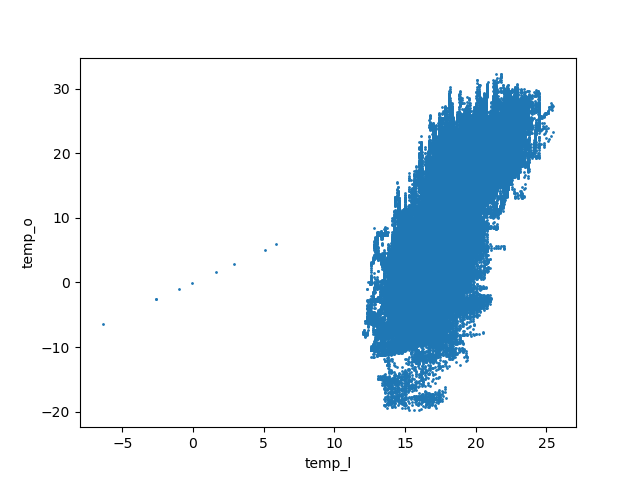
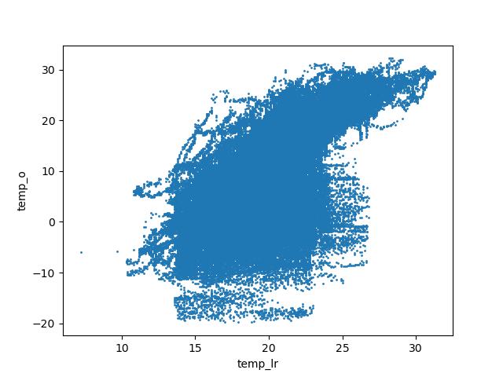
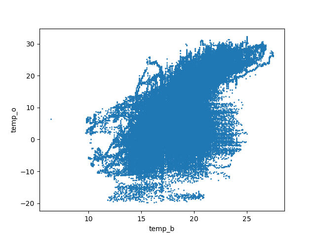
Entre le sous-sol et le salon, on a une belle corrélation linéaire :
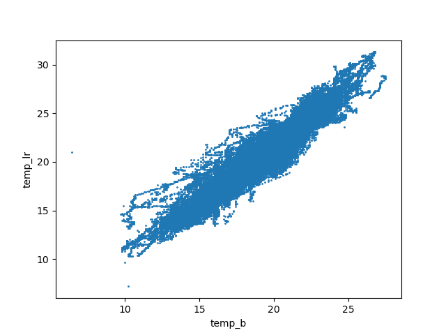
Entre le laboratoire et le salon, on obtient ce graphique :
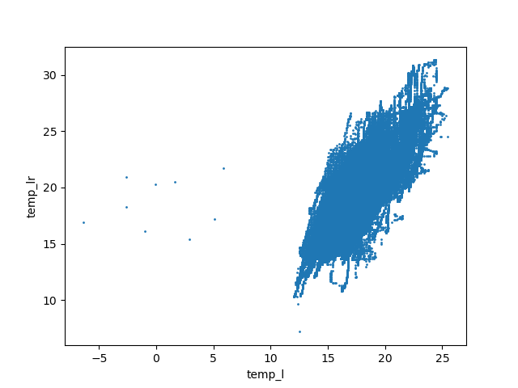
Un examen superficiel pourrait nous faire conclure à l'absence de corrélation linéaire. Or, on voit quelques points sur la gauche de la figure qui sont des anomalies et qui peuvent changer complétement l'aspect de la figure. On refait donc la figure en se concentrant sur la partie droite, c'est-à-dire des températures supérieures à 10°C :
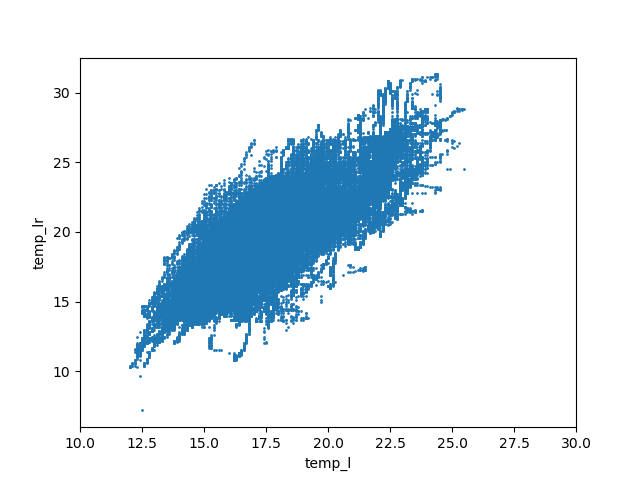
La corrélation linéaire est maintenant évidente.
C'est la même chose quand on réalise le graphique pour le laboratoire et le sous-sol.
Approche quantitative
Corrélation linéaire entre chaque paire d'attributs
La méthode corr () du paquetage pandas calcule le coefficient de corrélation linéaire.
À faire : calculer les coefficients de corrélation linéaire entre les différentes paires d'attributs. Ces valeurs confirment-elles votre intuition et vos constatations sur les graphiques ?
brad.loc [:, ["temp_l", "temp_lr", "temp_b", "temp_o"]].corr()
Vous devez trouver les coefficients suivants :
temp_b temp_l temp_lr temp_o temp_b 1.000000 0.801845 0.949450 0.623215 temp_l 0.801845 1.000000 0.790496 0.726466 temp_lr 0.949450 0.790496 1.000000 0.644963 temp_o 0.623215 0.726466 0.644963 1.000000
Modèles linéaires
On souhaite modéliser la relation linéaire entre les températures. Pour cela, on va utiliser les modèles linéaires du paquetage sklearn documentés sur cette page et celle-ci.
Vous commencez par créer un objet régresseur linéaire par une commande comme reg = linear_model.LinearRegression().
Vous devez fournir un ensemble de couples (x, y) et sklearn calcule la droite de régression par la méthode fit () appliquée au régresseur (donc reg.fit (x, y)). Cette méthode prend en paramètre deux tableaux numpy. Pour cela, il faut transformer les attributs en tableaux bidimensionnels numpy et ensuite appeler la méthode fit () avec ces deux tableaux. Je reprends tranquillement pour la température dans le sous-sol et celle dans le salon :
- je mets dans un objet (appelons-le temp_b comme l'attribut du tableau de données) un tableau numpy de taille Nx1 (il faut qu'il ait deux dimensions) les températures dans le sous-sol de Brad.
- je mets dans un autre objet (appelons-le temp_lr comme l'attribut du tableau de données) un autre tableau numpy de taille Nx1 les températures dans le salon de Brad.
- je crée un objet régresseur : reg = linear_model.LinearRegression()
- je calcule les paramètres du modèles (la droite de régression encore nommée la droite des moindres carrées) : reg.fit (temp_b, temp_lr)
À l'issue de l'appel de fit (), si tout s'est bien passé, l'objet reg contient deux attributs : coef_ est le coefficient directeur de la droite de régression, intercept_ est l'ordonnée à laquelle la droite de régression coupe l'axe des ordonnées.
Essayez de calculer les paramètres du modèle linéaire entre la température dans le salon et celle dans le sous-sol. Que se passe-t-il ? Pourquoi ?
Essayez de comprendre avant de lire la suite.
Comme l'indique la documentation, la méthode utilisée ne fonctionne pas en présence de données manquantes. La première question à se poser est : y en a-t-il beaucoup ou juste quelques-une ? S'il y en a quelques-unes, on peut calculer le modéle linéaire en retirant les individus correspondants à ces données manquantes et cela ne devrait pas avoir de sérieuses conséquences. S'il y en a beaucoup, c'est plus compliqué. Voyons dans quel cas on se trouve...
Traitement des NAs
La méthode isna () du paquetage pandas indique les valeurs inconnues dans un vecteur sous la forme d'un vecteur de booléens. Le nombre de NAs peut ensuite être compté en sommant les booléens (car, comme vous le savez, une valeur False correspond à l'entier 0 et une valeur True correspond à l'entier 1).
À faire : les attributs correspondants aux 4 températures contiennent-ils des valeurs NA ? Si oui, combien ?
Par exemple, pour l'attribut temp_b, on fait :
np.size (np.where (brad.temp_b.isna()))
Il y a 2 valeurs inconnues pour cet attribut.
De la même manière, on en trouve 3 pour le salon, 554 pour la laboratoire, 6 pour les températures extérieures.
On voit que pour les températures dans le salon, dans le sous-sol et à l'extérieur, le nombre de valeurs manquantes est très réduit.
On va donc simplement ne pas tenir compte des individus avec des données manquantes et calculer les modèles linéaires.
Vous pouvez essayer de le faire sans lire la suite.
Une idée simple consiste à construire l'ensemble des indices des individus qui n'ont pas de valeur manquante. Pour cela, je vous donne quelques ingrédients :
- la fonction append () du paquetage numpy met les éléments d'un vecteur au bout d'un autre. Par exemple : np.append (np.array ([1, 2, 3]), np.array ([-1, 6, 9, -4])) produit le vecteur array([ 1, 2, 3, -1, 6, 9, -4]).
- la fonction delete () du paquetage nnumpy retire les valeurs dont les indices sont spécifiés. Par exemple : np.delete (np.append (np.array ([1, 2, 3]), np.array ([-1, 6, 9, -4])), np.array ([3, 4, 1])) produit le vecteur array([ 1, 3, 9, -4]).
- la fonction where () du paquetage numpy renvoie un vecteur contenant les indices d'un vecteur dont les éléments vérifient une certaine condition. Par exemple, np.where (np.array (range (10)) % 2 == 1) renvoie (array([1, 3, 5, 7, 9]),) qui est un vecteur dont les éléments sont les indices des éléments impairs du premier. Plutôt que de trouver les valeurs impaires, on peut chercher les NAs.
Avec ces 3 méthodes, vous avez toutes les informations nécessaires pour construire un modèle linéaire en éliminant au préalable les valeurs manquantes.
À faire : calculer les coefficients des droites de régression linéaire entre les températures du salon, du sous-sol et à l'extérieur.
Pour le salon par rapport au sous-sol :
valid_indices = np.delete (np.array (range (brad.shape [0])), np.append (np.where (brad.loc [:,"temp_b"].isna()), np.where (brad.loc [:,"temp_lr"].isna())))
nb_valid_indices = len (valid_indices)
sc_lr = np.zeros ((nb_valid_indices, 1))
sc_b = np.zeros ((nb_valid_indices, 1))
sc_b [:,0] = brad.temp_b [valid_indices]
sc_lr [:,0] = brad.temp_lr [valid_indices]
from sklearn import linear_model
reg = linear_model.LinearRegression ()
reg.fit (sc_b, sc_lr)
ch = "L'équation de la droite de régression entre le salon et le sous-sol est : y = {:4.2f} x + {:4.2f}"
print (ch.format (reg.coef_[0][0], reg.intercept_ [0]))
La dernière ligne affiche : L'équation de la droite de régression entre le salon et le sous-sol est : y = 1.18 x + -2.08.
Puis, réaliser un graphique pour chacune des 3 combinaisons représentant les couples de températures et la droite de régression. Par exemple, pour les températures du sous-sol et du salon, vous devez obtenir quelque chose comme cela :
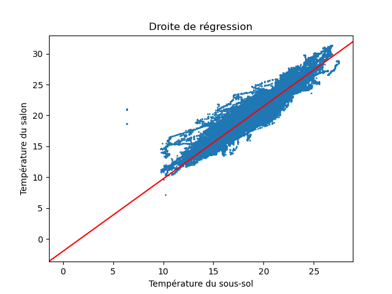
On ajoute une droite avec la méthode plt.axline () du paquetage matplotlib.
À faire : identifier les températures qui s'écartent significativement de la tendance indiquée par la droite de régression. Que pensez-vous de ces points ?
Ce sont des mesures aberrantes.
Imputation des valeurs manquantes
On a vu qu'il y a quelques valeurs manquantes dans les températures du sous-sol, du salon et à l'extérieur (et il en manque beaucoup pour le laboratoire, on laisse donc celui-ci de côté pour l'instant).
On peut imaginer au moins trois manières de donner une valeur :
- s'agissant d'une série temporelle (une suite de valeurs mesurées à des instants successifs), par inspection visuelle, on peut vérifier si les valeurs un peu avant et un peu après sont relativement constantes. Si elles sont constantes, on peut simplement remplacer le NA par cette valeur ;
- une solution très classique consiste à remplacer le NA par la moyenne des valeurs à l'instant d'avant et à l'instant d'après. Il est beaucoup mieux de réaliser une inspection visuelle et si celle-ci ne montre pas que la valeur est constante, faire un graphique de l'évolution de la valeur de l'attribut et « voir » quelle valeur conviendrait le mieux ;
- utiliser les coefficients de régression linéaire entre les températures dans les différents lieux pour prédire les valeurs manquantes.
À faire : imputer les valeurs manquantes pour ces 3 pièces.
Par exemple, la température du salon est manquante pour la donnée d'indice 113121 (et deux autres).
S'agissant d'une valeur isolée, on regarde les valeurs un peu avant et un peu après celle qui manque :
>>> brad.loc [113117:113125, "temp_lr"] 113117 20.2 113118 20.2 113119 20.0 113120 19.8 113121 NaN 113122 19.9 113123 19.8 113124 19.8 113125 19.8Les températures sont enregistrées toutes les 3 minutes : elles varient donc très peu. On peut imputer 19,8 ou 19,85 ou 19.
Même si ici ce n'est pas la peine de chercher à faire plus compliqué, je montre comment on ferait pour déterminer une valeur en utilisant la relation linéaire existant entre la température du salon et celle du sous-sol. Précédemment, on a calculé les paramètres du modèle linéaire entre ces deux attributs et ceux-ci sont dans l'object reg. On va donc imputer la valeur :
reg.coef_ [0][0] * brad.loc [113121, "temp_b"] + reg.intercept_ [0]
qui donne 19,73. C'est très proche de la valeur que l'on a imputé par une démarche purement manuelle.
Pour cet indice, la température est également inconnnue dans le laboratoire, on ne peut donc pas l'utiliser pour prédire la température du salon. Il est intéressant d'examiner un cas où l'on dispose des températures dans le laboratoire et dans le sous-sol. C'est le cas pour l'indice 150533.
Si on prédit la température du salon à partir de celle du sous-sol en utilsiant le modèle linéaire, on obtient 26,57°C.
Si on prédit la température du salon à partir de celle du laboratoire, on obtient 23,69°C.
Si on inspecte visuellement les tempéatures du salon avant et après cet indice, on voit que la température est constante, à 26,7°C. C'est proche de la valeur prédite à partir de la température du sous-sol, plus éloignée de celle prédite à partir de la température du laboratoire. On peut (on doit !) être intrigué. Or, on note que le coefficient de corrélation linéaire entre la température du salon est celle du sous-sol (0,95, c'est vraiment beaucoup) est bien supérieure à ce coefficient entre température du sous-sol et celle du laboratoire (0,79). Aussi, c'est normal que la température du sous-sol prédise mieux la température du salon.